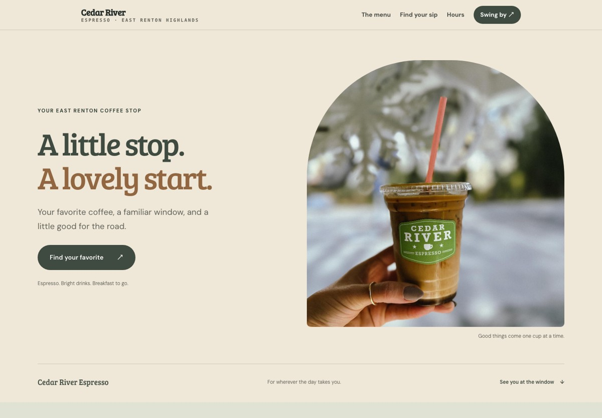
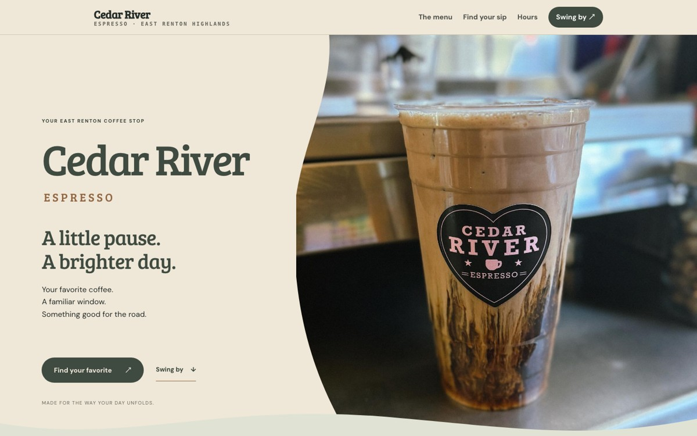
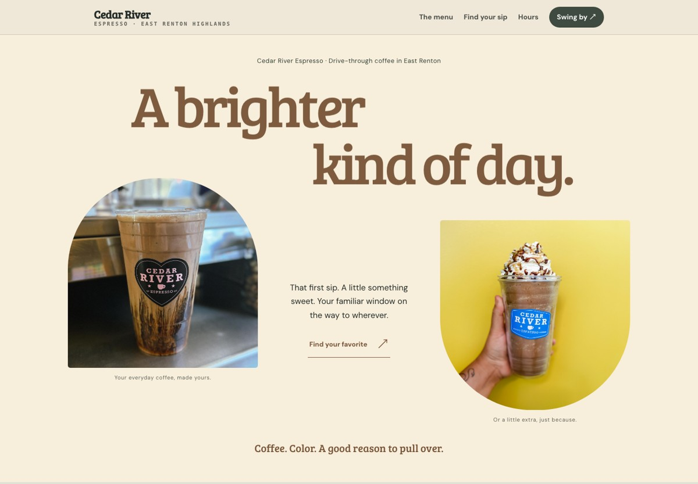

01
An Easy Morning

Soft, open and unhurried. A different real coffee photo.
Three different ways into the same Cedar River website. Open a full page, or compare the mobile versions.

Soft, open and unhurried. A different real coffee photo.

An immersive coffee photograph with a gentle curved edge.

A bolder editorial headline and a playful pair of photos.